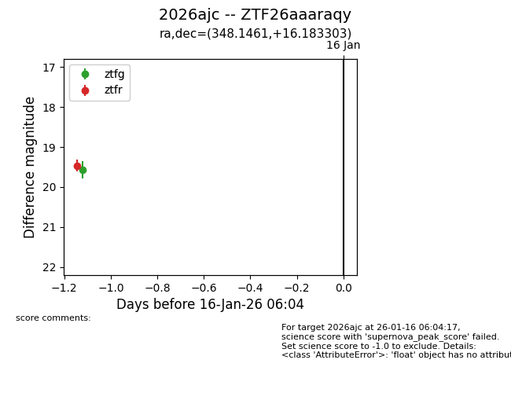
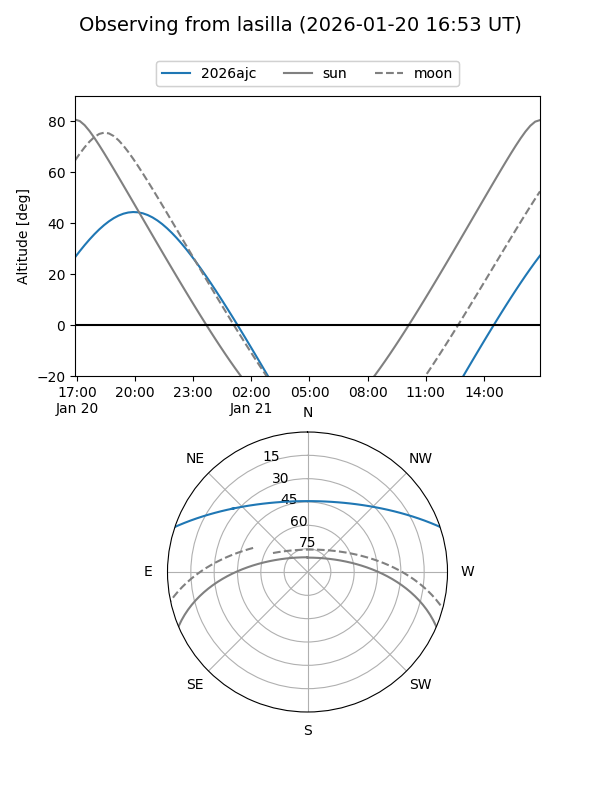
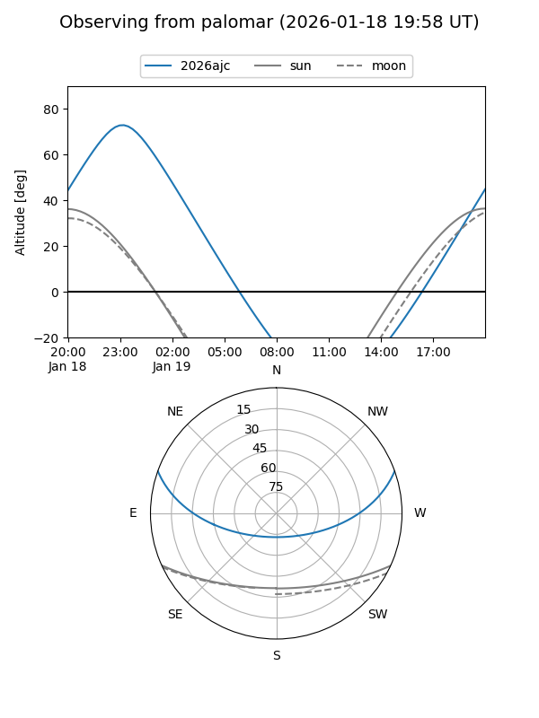
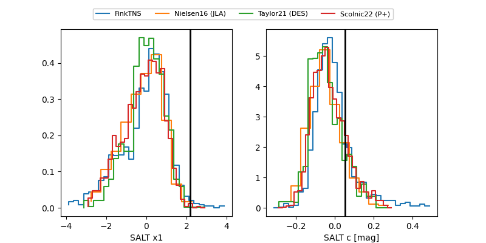

2026ajc
Target 2026ajc at 2026-01-17 09:05
Aliases and brokers:
FINK: link
Lasair: link
ALeRCE: link
TNS: link
YSE: link
alt names
ZTF26aaaraqy (ztf,fink_ztf)
2026ajc (tns,yse)
Coordinates:
equatorial (ra, dec) = 348.1461,+16.18330
equatorial (HMS+DMS) = 23:12:35.06,+16:10:59.89
galactic (l, b) = (91.0638,-40.49268)
Flags:
Photometry:
last ztfg=19.57, ztfr=19.46
1 ztfg, 1 ztfr detections
Lightcurve

Visibility


Additional plots
